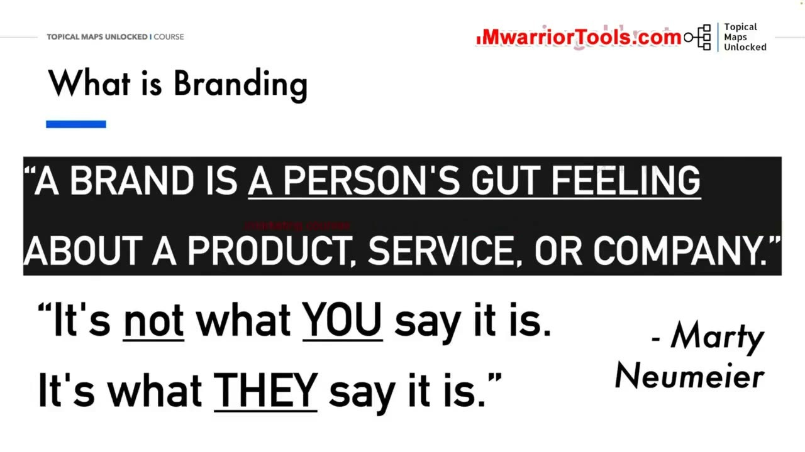
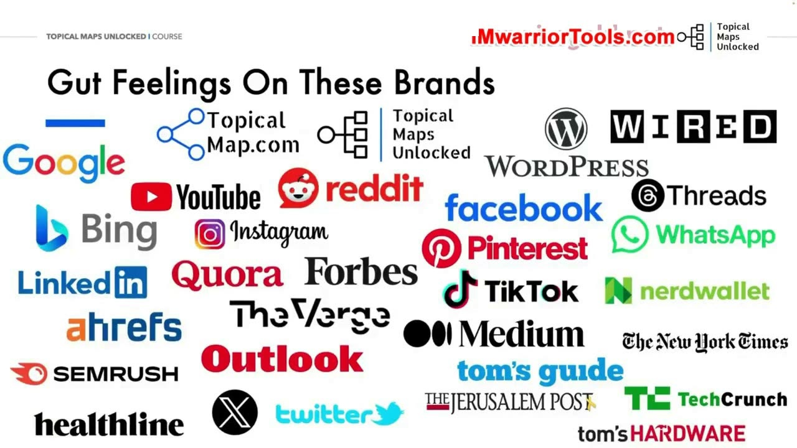
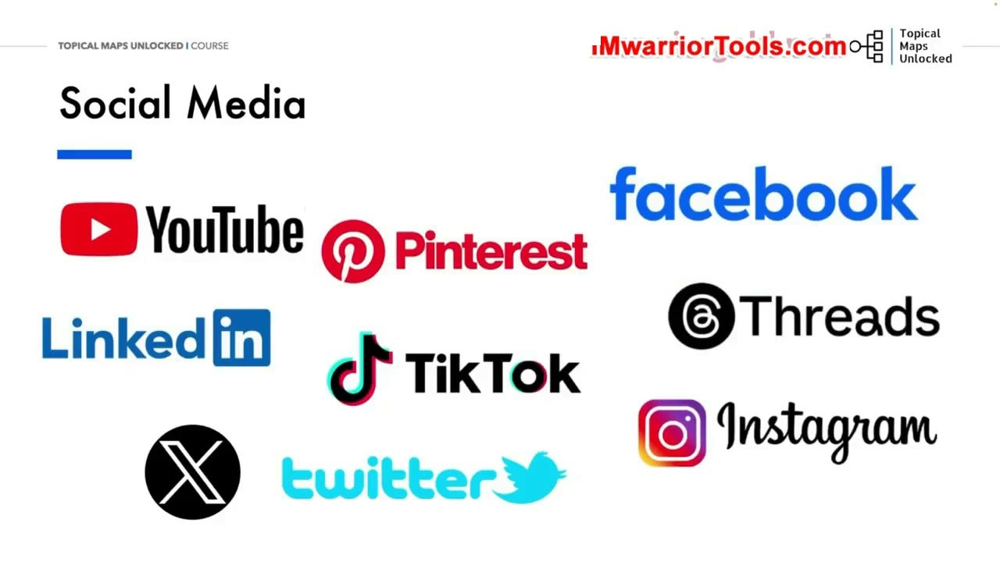
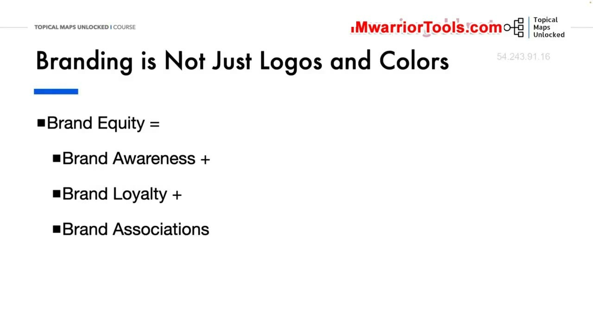
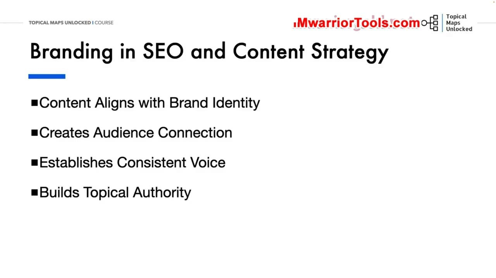

What is Branding
1. Vai trò thường bị lãng quên của thương hiệu trong xây dựng Topical Authority
Chúng ta đã cùng nhau thảo luận qua những nguyên tắc cơ bản nhất của Topical authority (thẩm quyền chủ đề) và đều hiểu rõ tầm quan trọng sống còn của nó đối với SEO hiện đại ngày nay. Tuy nhiên, có một khía cạnh mang tính quyết định nhưng lại rất ít khi được các chuyên gia SEO đề cập đến một cách đầy đủ và thường xuyên: đó chính là vai trò cốt lõi của thương hiệu (Branding) trong việc phát triển một cấu trúc thẩm quyền chủ đề thực sự vững chắc.
Mặc dù khóa học Topical Maps Unlocked không phải là một khóa đào tạo thuần túy về nghệ thuật xây dựng thương hiệu thương mại, nhưng Yoyao nhấn mạnh rằng bạn bắt buộc phải hiểu sâu sắc thương hiệu của chính mình thì mới có thể tạo ra được một bản đồ chủ đề (Topical map) và một chiến lược nội dung (Content strategy) thực sự mang lại hiệu quả chuyển đổi.
Bản sắc thương hiệu của bạn tác động trực tiếp và chi phối toàn bộ quy trình: từ việc lựa chọn các chủ đề nghiên cứu ban đầu, cách phân nhóm từ khóa, xây dựng kế hoạch sản xuất nội dung, cho đến cấu trúc phân cấp các thư mục trên trang web của bạn. Nhiều người ngoài kia thường đưa ra lời khuyên chung chung rằng: "Hãy xây dựng thương hiệu của bạn đi!" (chính Yoyao cũng từng nói điều đó). Nhưng câu hỏi thực sự là: xây dựng thương hiệu ở đây có ý nghĩa cụ thể là gì? Và nó tác động như thế nào đến thẩm quyền chủ đề, quá trình lập bản đồ và chiến lược SEO dài hạn của bạn?
2. Định nghĩa chuẩn xác: Thương hiệu là cảm nhận trực giác của người khác
Để trả lời câu hỏi đó, chúng ta phải bắt đầu từ định nghĩa chuẩn xác nhất về thương hiệu. Yoyao dẫn lại lời của Marty Neumeier, một trong những chuyên gia huyền thoại hàng đầu thế giới về thương hiệu và là tác giả của nhiều cuốn sách kinh điển về xây dựng bản sắc doanh nghiệp:
"A brand is a person's gut feeling about a product, service, or company. It's not what YOU say it is. It's what THEY say it is."
(Thương hiệu là cảm giác trực giác của một con người về một sản phẩm, dịch vụ hoặc công ty. Nó hoàn toàn không phải là những gì BẠN tự tuyên bố về mình, mà là những gì HỌ thực sự cảm nhận và nói về bạn).
Xây dựng thương hiệu thực chất là cả một quá trình nỗ lực tạo dựng ra một bản sắc riêng biệt và một hình ảnh độc đáo cho sản phẩm, dịch vụ hoặc doanh nghiệp trong tâm trí sâu kín của người tiêu dùng. Đó là nghệ thuật thiết lập một kết nối cảm xúc mạnh mẽ với khán giả của bạn, từ đó xây dựng lòng trung thành bền vững vượt xa khỏi hành vi mua bán một món hàng đơn thuần. Thương hiệu chính là trái tim và linh hồn của doanh nghiệp; đó là lý do duy nhất khiến bạn trở nên khác biệt hoàn toàn so với mọi đối thủ cạnh tranh trên thị trường.

3. Khám phá phản ứng trực giác: Google, Microsoft Bing, Ahrefs và Semrush
Yoyao mời người học cùng thực hiện một bài tập nhỏ: Khám phá những phản ứng trực giác đầu tiên khi nhìn vào các thương hiệu lớn: Google, Microsoft, Bing, LinkedIn, Healthline, TechCrunch, Wired, Ahrefs, Semrush, YouTube, New York Times, Forbes, WordPress, cho đến cả chính TopicalMap.com.
Luôn luôn có một phản ứng trực giác ban đầu xuất hiện trong tích tắc. Hãy cùng xem xét từng thương hiệu một cách riêng lẻ và so sánh xem cảm nhận thực tế của bạn có trùng khớp với sứ mệnh và giá trị mà họ công bố hay không:
- Google: Họ tuyên bố sứ mệnh của mình là "tổ chức lại toàn bộ thông tin của thế giới và làm cho nó có thể truy cập được ở mọi nơi một cách hữu ích nhất cho mọi người", cam kết cải thiện đáng kể cuộc sống của càng nhiều người càng tốt. Bạn có thực sự đồng ý với điều họ nói không? Hay bạn cảm thấy họ đang ngày càng thương mại hóa và ưu tiên hiển thị quảng cáo?
- Microsoft & Bing: Sứ mệnh của họ là "trao quyền cho mọi cá nhân và tổ chức trên hành tinh để đạt được nhiều thành tựu hơn". Họ luôn đề cao sự tôn trọng, tính liêm chính và trách nhiệm xã hội. Liệu điều đó có phản ánh đúng cảm nhận của bạn về hệ sinh thái Windows và công cụ tìm kiếm Bing hay không?
- Ahrefs: Với công cụ tìm kiếm Yep.com và bộ công cụ SEO nổi tiếng, triết lý của họ là "Chúng tôi nghĩ lớn, bắt đầu nhỏ và hành động thật nhanh" (We think big, start small, and move fast). Họ là công ty SaaS tạo ra các công cụ SEO chuyên sâu và cung cấp một kho tàng tài liệu giáo dục hoàn toàn miễn phí cho cộng đồng tiếp thị. Bạn có thực sự tin tưởng vào triết lý đó của họ không?
- Semrush: Công ty đại chúng này tự định vị mình là "nền tảng SaaS toàn diện quản lý khả năng hiển thị trực tuyến và tiếp thị nội dung". Họ khẳng định Semrush là phần mềm duy nhất cho phép các chuyên gia tiếp thị xây dựng, quản lý và đo lường các chiến dịch đa kênh để tối đa hóa độ phủ sóng. Khi nhìn vào Semrush, bạn nghĩ đến điều gì? Cơ hội mở rộng kinh doanh, công cụ phân tích từ khóa, hay bạn nghĩ đến việc đối thủ sử dụng nó để săn lùng backlink và làm SEO ký sinh (parasite SEO)?

4. Mạng xã hội và câu chuyện tái thương hiệu: Bài học từ Twitter đổi tên thành X
Điều tương tự cũng diễn ra khi bạn nhìn vào biểu tượng của các nền tảng mạng xã hội: YouTube, Pinterest, Facebook, LinkedIn, TikTok, Threads, Instagram hay Twitter. Bạn nghĩ gì về tập đối tượng khán giả của từng nền tảng đó? Liệu tệp người dùng của họ có thực sự phù hợp với phong cách và sản phẩm của thương hiệu bạn hay không? Bạn sẽ sử dụng từng kênh như thế nào trong chiến lược phân phối nội dung của mình?
Và câu chuyện về việc tái cấu trúc thương hiệu (Rebranding) thì sao? Hãy nhìn vào trường hợp kinh điển của Twitter khi chính thức đổi tên thành X. Việc đổi tên, thay đổi logo con chim xanh quen thuộc cùng sự tham gia trực tiếp của tỷ phú Elon Musk với hàng loạt chính sách mới đã làm thay đổi hoàn toàn nhận thức của bạn về nền tảng này như thế nào? Bạn cảm nhận nền tảng này trước và sau khi đổi tên ra sao? Những thay đổi đó có làm cho X trở nên hữu ích hơn hay phiền toái hơn đối với công việc và thói quen hàng ngày của bạn? Đó chính là minh chứng sống động nhất cho thấy thương hiệu không nằm ở cái tên, mà nằm ở trải nghiệm thực tế mà người dùng cảm nhận được.

5. Thương hiệu vượt xa khỏi Logo và Màu sắc: Khái niệm Tài sản thương hiệu
Rất nhiều người ngoài kia vẫn giữ quan niệm đơn giản rằng: làm thương hiệu chỉ là thiết kế một chiếc logo thật đẹp và chọn ra một bộ màu sắc bắt mắt. Đúng là logo và bảng màu thường là những khía cạnh dễ nhìn thấy nhất, đập vào mắt người dùng đầu tiên. Nhưng việc xây dựng thương hiệu hiệu quả và bài bản thì vượt xa các yếu tố thị giác bề ngoài đó rất nhiều.
Một thương hiệu mạnh sẽ tích lũy và xây dựng nên Brand Equity (Tài sản thương hiệu). Đây là một tài sản kinh doanh vô hình nhưng có giá trị cực kỳ to lớn đối với doanh nghiệp. Tài sản này được cấu thành từ 3 yếu tố nền tảng:
- Brand Awareness (Nhận thức thương hiệu): Mức độ dễ dàng mà khách hàng có thể nhận ra, nhớ đến và gọi tên thương hiệu của bạn giữa muôn vàn đối thủ khi họ có nhu cầu.
- Brand Loyalty (Lòng trung thành với thương hiệu): Xu hướng tự nhiên của khách hàng liên tục quay trở lại và ưu tiên lựa chọn sản phẩm/nội dung của bạn thay vì chạy sang các đối thủ cạnh tranh khác.
- Brand Associations (Sự liên tưởng thương hiệu): Toàn bộ những suy nghĩ, cảm xúc, hình ảnh, nhận thức, niềm tin và trải nghiệm thực tế được gắn kết chặt chẽ với tên tuổi của bạn trong tâm trí khách hàng.
Tài sản thương hiệu vững chắc sẽ trực tiếp nâng cao uy tín và sự liên quan của bạn trong mắt khách hàng. Nó tạo dựng niềm tin sâu sắc, từ đó thiết lập nên một rào cản phòng thủ cực kỳ kiên cố (moat) ngăn chặn các đối thủ cạnh tranh xâm nhập thị phần của bạn. Xây dựng thương hiệu tạo ra kết nối cảm xúc chân thật, truyền tải tính cách riêng và hệ giá trị tổ chức của bạn. Hãy luôn ghi nhớ: Thương hiệu cuối cùng chính là những gì khách hàng nghĩ và cảm nhận về doanh nghiệp của bạn; đó là lời hứa bạn đưa ra và toàn bộ trải nghiệm thực tế mà bạn mang lại cho họ.

6. Bốn tác động chiến lược của Branding đối với SEO và Content Strategy
Cuối cùng, Yoyao tổng kết lại 4 tác động cốt lõi của việc xây dựng thương hiệu đối với chiến lược SEO và kế hoạch nội dung của một website xây dựng Topical authority:
- Định hướng nội dung chuẩn xác và đồng nhất với bản sắc: Xây dựng thương hiệu giúp bạn sáng tạo ra những nội dung nhất quán, có thẩm quyền và phù hợp chặt chẽ với các mục tiêu kinh doanh tổng thể. Nội dung của bạn phải là tấm gương phản chiếu nhận diện thương hiệu. Nó là kim chỉ nam hướng dẫn việc lựa chọn chủ đề, khoanh vùng nghiên cứu từ khóa và đảm bảo mọi bài viết đều truyền tải đúng giá trị và thế mạnh độc nhất của doanh nghiệp.
- Thiết lập kết nối sâu sắc và củng cố điểm bán hàng độc nhất (USP): Thương hiệu giúp tạo ra những bài viết chạm đúng vào cảm xúc và nỗi đau của độc giả, gây tiếng vang mạnh mẽ với khán giả mục tiêu. Nó làm nổi bật quan điểm chuyên môn độc đáo của bạn, từ đó khắc sâu giá trị khác biệt và củng cố đề xuất bán hàng độc nhất (Unique Selling Proposition) trên thị trường.
- Phát triển giọng điệu thương hiệu nhất quán (Consistent Voice): Thương hiệu giúp bạn thiết lập một văn phong đồng nhất, chuẩn mực trên tất cả các kênh xuất bản nội dung (từ website, blog cho đến email và mạng xã hội). Giọng văn nhất quán giúp tăng cường khả năng nhận diện, khiến độc giả đọc một đoạn văn là nhận ra ngay phong cách của bạn mà không cần nhìn logo.
- Xây dựng thẩm quyền chủ đề (Topical Authority) vững chắc và bền bỉ: Xây dựng thương hiệu định vị website của bạn như một chuyên gia đầu ngành đáng tin cậy nhất trong mắt người dùng và các thuật toán tìm kiếm. Nó hỗ trợ trực tiếp cho sự thành công lâu dài của chiến lược SEO, định hình kế hoạch phân bổ nguồn lực nội dung và giúp thương hiệu nổi bật rực rỡ, không bị chìm nghỉm giữa một bối cảnh nội dung đang ngày càng đông đúc và bão hòa bởi AI.
Những nguyên lý thương hiệu nền tảng này sẽ tiếp tục được cụ thể hóa và triển khai chi tiết vào các bước thực hành tiếp theo trong các bài học sau của khóa học.

Nguồn và đối chiếu
- Topical Maps Unlocked 2.0 · 01-What is Branding (Video bài học chính).
- Đối chiếu ngữ nghĩa với bản tiếng Anh: Bản Tiếng Anh/03-Brand and Content Strategy Module/01-What is Branding.mp4 (xác thực các trích dẫn của Marty Neumeier, định nghĩa Brand Equity và các giá trị cốt lõi của Google, Ahrefs, Semrush).